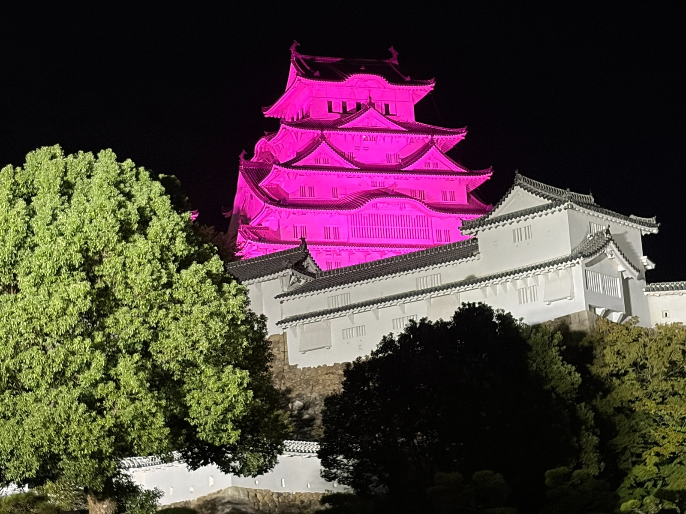
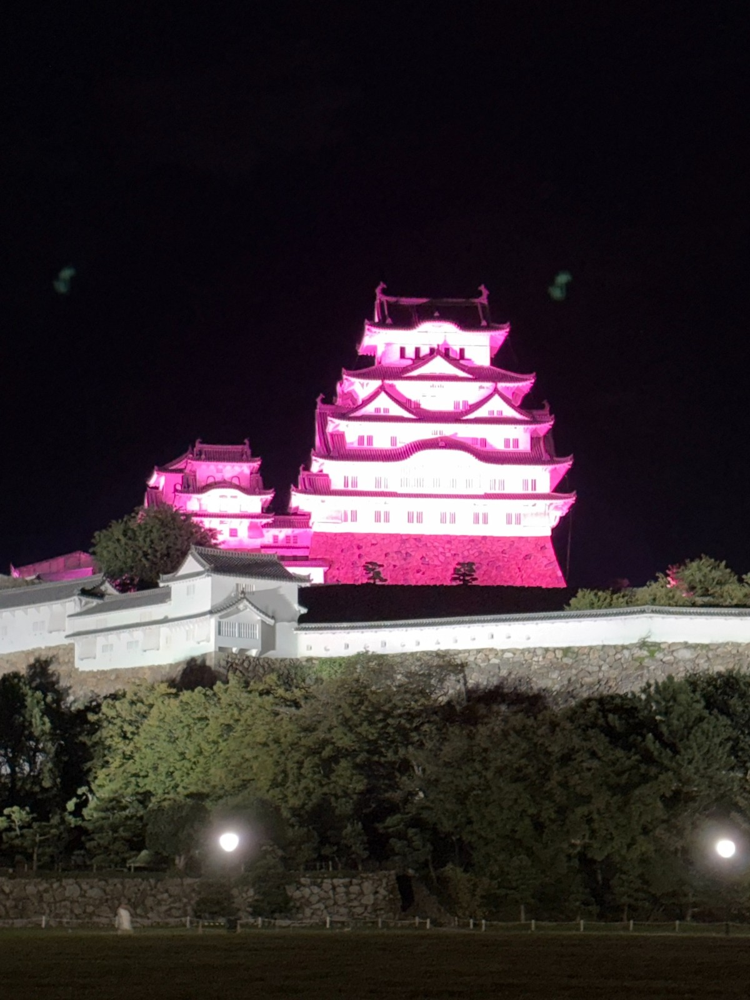
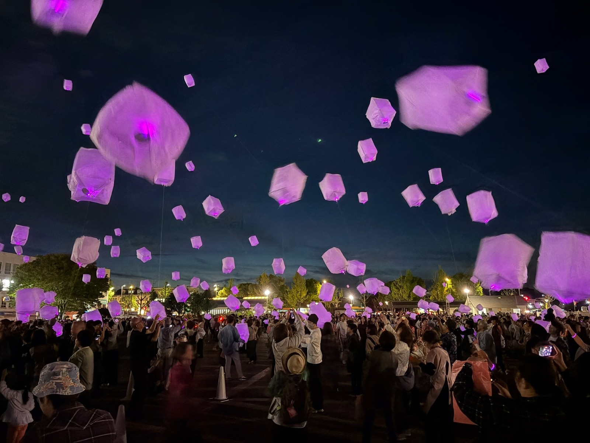

姫路城ピンクスカイランタン2026について
姫路城ピンクスカイランタン2026は、乳がんへの理解と検診の大切さを伝える、ピンクリボン活動のイベントです。2026年10月3日（土）、兵庫県姫路市の大手前公園を会場に開催されました。
ピンク色に照らされた姫路城を背景に、参加者がピンクのスカイランタンを上げる光景が、このイベントの見どころです。お城のライトアップとランタンの光を通じて、自分自身や大切な家族の健康について考えるきっかけを届けます。
ピンクリボンひめじの活動
ピンクリボンひめじは、乳がんの患者や経験者の呼びかけによって、2012年10月1日に設立されました。
乳がんの正しい知識を広め、検診による早期発見につなげる活動を続けており、2015年からは姫路城をピンク色にライトアップする取り組みを行っています。
姫路城に灯すピンクの光には、乳がんについて知ってもらうとともに、闘病中の方やその家族、乳がんで大切な人を亡くした方々に希望を届けたいという思いが込められています。
開催場所と最寄り駅
大手前公園
会場は、姫路市本町68番地24-1にある大手前公園です。姫路城を背景に、スカイランタンを楽しむことができる場所です。
最寄り駅は、JR「姫路駅」または山陽電鉄「山陽姫路駅」です。駅から会場までは徒歩約10分で、電車で訪れやすい立地です。
ピンクの姫路城とスカイランタン
① 姫路城のピンクライトアップ
姫路城では、ピンクリボン運動の一環として、2026年10月1日と10月3日にピンク色のライトアップが案内されました。
白い漆喰が印象的な姫路城がピンク色に照らされ、普段とは異なる表情を見せます。この特別な色は、乳がんの正しい知識と検診の大切さを広く伝えるためのものです。


② ピンクスカイランタンの一斉打上げ
姫路城ピンクスカイランタンは、2026年で4回目の開催を迎えました。
イベントの中心となるのは、18時30分のスカイランタン打上げです。
参加者が持つランタンが一斉に浮かび上がり、ピンクに照らされた姫路城と、空に広がるランタンの光を一緒に楽しめます。2026年10月3日も、18時30分の合図に合わせてランタンが上がりました。
2026年10月3日の開催日程
17時｜開場・ランタン引換開始
会場が開き、購入者へのランタンの引換えが始まります。事前に郵送された引換ハガキを受付に持参し、ランタンを受け取る流れです。
18時｜イベント開始
イベントが始まり、18時30分の打上げへと進みます。
18時30分｜ランタン打上げ
ピンクのスカイランタンを一斉に上げる、当日のメインイベントです。
19時｜終了予定
主催者の案内では、19時に終了する予定となっていました。
ランタンの購入と参加方法
ランタンは先着500個、1個3,800円で案内され、打上げに参加する場合は、1組につき1個以上の購入が必要でした。
申込フォームから申し込み、指定口座への入金が確認されると、ランタン引換ハガキが郵送される仕組みです。当日は、そのハガキとランタンを受付で交換します。
雨天や強風の場合は、翌日の10月4日（日）に順延する計画で、開催の可否は前日・当日に主催者のホームページで案内することになっていました。
結婚記念日に合わせ、妻と2人で訪れた感想
2026年10月3日、10月の結婚記念日に合わせて、妻と2人で姫路城ピンクスカイランタンのイベントを訪れました。記念日の思い出として、いつもとは少し違う時間を一緒に過ごそうと、食事とランタンの打上げを楽しむ一日にしました。
イベントへ向かう前に、しゃぶ葉で夕食をいただきました。今回選んだのは、「秋のきのこと鴨しゃぶフェア」の鴨しゃぶ食べ放題コースです。土日祝のディナーで、全11種類のお肉を楽しめる内容でした。
なかでも楽しみにしていたのは、「鴨肉」「九州黒豚」「牛みすじ」の3品です。選べるお肉の種類が増え、価格が上がるコースには、こうした厳選されたお肉が加わります。せっかくなので、今回はこの3品を中心に味わうことにしました。
まずは3品をそれぞれいただき、好みの味を確かめました。そのなかでも、特においしかったのが「鴨肉」と「牛みすじ」です。その後はこの2品を中心に注文し、妻と一緒にゆっくりと食事を楽しみました。
とりわけ印象に残ったのは、「ポルチーニ香るきのこだし」です。きのこの豊かな香りが広がるだしは絶品で、お肉をくぐらせるたびに、だしのおいしさも一緒に味わえました。秋らしい味わいを楽しめる、満足のいく夕食になりました。
食事の後は、姫路城ピンクスカイランタンの会場へ向かいました。ランタンは事前に代金を振り込み、後日届いた引換ハガキを当日の受付で渡して受け取る仕組みです。私たちもハガキと引き換えにランタンを受け取り、18時30分の打上げを待ちました。
引き換えた時点では、まだ周囲が明るく、ランタンのピンクの光はそれほど目立ちませんでした。それでも、実際にランタンを手にすると、これから始まる打上げへの楽しみが増していきました。
18時30分の打上げ時刻になる頃には、辺りも薄暗くなり、ランタンのピンクの光がきれいに浮かび上がるようになりました。受け取ったときとは印象が変わり、夕暮れのなかでやさしく発光する姿が、とてもきれいでした。
妻と2人で同じ光景を眺めながら過ごす時間は、結婚記念日の思い出にふさわしい、心に残るひとときになりました。おいしい食事を楽しみ、最後にピンクのランタンを一緒に上げることができ、10月の大切な思い出がまた一つ増えました。
